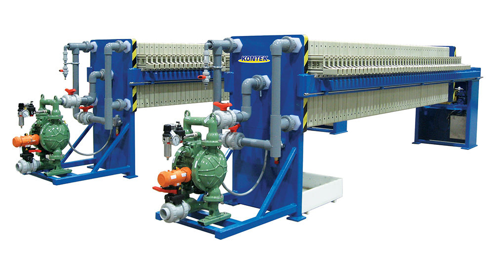
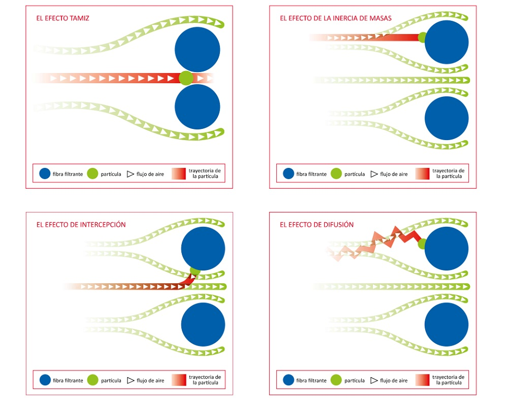

Filtración industrial
La barrera porosa que separa sólidos de fluidos. Mecanismos de retención, la teoría basada en la ley de Darcy, los grandes tipos de filtros industriales, los medios filtrantes y el ciclo de operación — con gráficas y calculadoras interactivas para dimensionar tu equipo.
Esta lectura acompaña la sesión sobre filtración, una de las operaciones de separación más antiguas y, a la vez, más extendidas de la industria de procesos: desde producir agua potable hasta recuperar el cristal de un producto farmacéutico o deshidratar lodos. Recorre los mecanismos de retención, la teoría basada en la ley de Darcy, los grandes tipos de filtros industriales, los medios filtrantes y el ciclo de operación — con gráficas y calculadoras para dimensionar el equipo de tu proyecto.

- Caracterizar la suspensión: concentración de sólidos, tamaño y naturaleza de las partículas, propiedades del líquido.
- Definir el objetivo: ¿clarificación del líquido o recuperación de sólidos? ¿Qué grado de separación se requiere?
- Seleccionar un tipo de filtro industrial adecuado para la aplicación y justificar la elección.
- Estimar preliminarmente el área de filtración requerida con datos de laboratorio (si se tuvieran) o valores típicos de la literatura para la resistencia específica de la torta \(\alpha\) y la resistencia del medio \(R_m\) de sistemas similares.
- Describir el ciclo de operación del filtro seleccionado.
Sección 01
1La filtración como barrera esencial
La filtración es una operación unitaria de separación mecánica o física diseñada para remover partículas sólidas suspendidas en un fluido (líquido o gas), mediante el paso de este a través de un medio poroso (el medio filtrante). Los sólidos son retenidos por el medio, mientras que el fluido clarificado —el filtrado o permeado— lo atraviesa.
Objetivos principales
Especialmente en el tratamiento de aguas, la filtración persigue tres objetivos no excluyentes:
- Clarificación del fluido: eliminar turbidez, partículas suspendidas y microorganismos (bacterias, protozoos) para producir agua potable segura o un efluente que cumpla la normativa ambiental.
- Recuperación de sólidos: en muchos contextos industriales, los sólidos retenidos son el producto de interés.
- Pretratamiento: a menudo la filtración es una etapa previa a procesos de purificación más avanzados (desinfección UV, ósmosis inversa, adsorción).
Sección 02
2Principios fundamentales
Mecanismos de retención de partículas
La forma en que las partículas son retenidas depende de su tamaño relativo al de los poros del medio y de las características del flujo. Rara vez actúa uno solo: varios mecanismos operan simultáneamente.

Filtración superficial vs. filtración en profundidad
Cuando el tamizado domina y los sólidos se acumulan sobre la cara del medio, hablamos de filtración superficial (o de torta). Cuando las partículas son más finas que los poros y quedan atrapadas dentro del lecho por intercepción, sedimentación y adhesión, hablamos de filtración en profundidad —típica de los lechos granulares—.
Componentes clave de un sistema de filtración
- Suspensión de alimentación (prefiltrado): la mezcla sólido-fluido que ingresa al filtro.
- Medio filtrante: la barrera porosa que retiene los sólidos. Su elección es crítica.
- Torta de filtración (cake): la capa de sólidos acumulados sobre o dentro del medio. A medida que crece, la torta misma actúa como medio filtrante, a menudo más eficiente para partículas finas.
- Filtrado (o permeado): el fluido clarificado que ha atravesado el medio.
- Fuerza impulsora (\(\Delta P\)): la diferencia de presión a través del filtro (medio + torta) que provoca el flujo. Puede generarse por gravedad, vacío o presión aplicada.
Sección 03
3Teoría básica de la filtración
El flujo de un fluido a través de un medio poroso —la torta y el medio filtrante— se describe fundamentalmente por la ley de Darcy. Para la filtración, esta ley se modifica para incluir tanto la resistencia de la torta como la del medio.
Filtración a presión constante (\(\Delta P = \text{cte}\))
Se aplica una diferencia de presión constante y el caudal disminuye con el tiempo a medida que la torta crece. Integrando la ecuación general (con \(\alpha\) y \(w\) constantes):
Esta expresión tiene la forma de una recta \(y = mx + c\) si se grafica \(t/V\) (tiempo por unidad de volumen de filtrado) frente a \(V\) (volumen de filtrado). De la pendiente \(m\) y la ordenada al origen \(b\) de esa recta se determinan experimentalmente \(\alpha\) y \(R_m\) — el procedimiento estándar de un ensayo de filtración en laboratorio.
Linealización a presión constante: \(t/V\) vs. \(V\)
Mueve las propiedades de la torta y del medio para ver cómo cambian la pendiente y el intercepto de la recta de laboratorio (\(\mu = 1{,}0\times10^{-3}\) Pa·s, agua a 20 °C).
La pendiente sube con \(\alpha\), \(w\) y \(\mu\), y baja con \(A^2\) y \(\Delta P\). El intercepto depende solo de la resistencia del medio. Una torta compresible haría que \(\alpha\) (y por tanto \(m\)) cambie al variar \(\Delta P\).
- \(\alpha = \dfrac{2\,m\,A^2\,\Delta P}{\mu\,w} = \dfrac{2(6{,}7\times10^{3})(1)^2(1{,}5\times10^{5})}{(10^{-3})(20)} \approx 1{,}0\times10^{11}\) m/kg
- \(R_m = \dfrac{b\,A\,\Delta P}{\mu} = \dfrac{(67)(1)(1{,}5\times10^{5})}{10^{-3}} \approx 1{,}0\times10^{10}\) m⁻¹
Filtración a caudal constante (\(dV/dt = Q = \text{cte}\))
Se mantiene un caudal constante —por ejemplo con una bomba de desplazamiento positivo— y la presión aumenta con el tiempo a medida que crece la torta. Reordenando la ecuación general:
Como \(V = Q\,t\) a caudal constante, la presión necesaria aumenta linealmente con el tiempo (o con el volumen total filtrado) hasta alcanzar el límite del equipo, momento en el que termina el ciclo.
Compresibilidad de la torta
La resistencia específica \(\alpha\) no siempre es constante. En muchas tortas —sobre todo las de partículas finas o flóculos deformables— \(\alpha\) aumenta con la presión porque la torta se compacta. Se modela con una relación empírica:
donde \(\alpha_0\) es una constante y \(s\) es el coeficiente de compresibilidad: \(s = 0\) para tortas incompresibles; \(0 < s < 1\) para tortas compresibles. Cuando \(s\) es alto, subir \(\Delta P\) deja de aumentar el caudal porque la torta se compacta y opone más resistencia — un compromiso central del diseño.
Explorador de compresibilidad: \(\alpha = \alpha_0\,(\Delta P)^{s}\)
Observa cómo la resistencia específica responde a la presión según el coeficiente de compresibilidad \(s\).
Con \(s = 0\) la curva es horizontal (torta incompresible). A medida que \(s \to 1\), \(\alpha\) crece casi proporcionalmente a la presión y el beneficio de subir \(\Delta P\) se desvanece.
Dimensionamiento: caudal y tiempo de ciclo
Con las propiedades de la torta y del medio ya estimadas, esta calculadora resuelve el problema de diseño directo: dado un volumen objetivo de filtrado y una presión de operación, ¿cuánto tarda el ciclo y qué caudal entrega el filtro?
Calculadora de filtración a presión constante
Modelo a \(\Delta P\) constante con \(\mu = 1{,}0\times10^{-3}\) Pa·s: \(t = \dfrac{\mu\alpha w}{2A^2\Delta P}V^2 + \dfrac{\mu R_m}{A\Delta P}V\). El caudal instantáneo es \(dV/dt = \dfrac{A\Delta P}{\mu(\alpha w V/A + R_m)}\).
Sección 04
4Tipos de filtros industriales comunes
No existe un filtro universal: la elección depende de la concentración de sólidos, del objetivo (clarificar vs. recuperar), del modo de operación (continuo o por lotes) y del caudal. Explora las cinco grandes familias en el visor interactivo:
Filtración por membranas
Aunque es un tema extenso que se cubre por separado, conviene mencionar que la microfiltración (MF) y la ultrafiltración (UF) son tecnologías de filtración que usan membranas con tamaños de poro definidos para separar partículas muy finas, coloides, bacterias y virus. Junto con la nanofiltración (NF) y la ósmosis inversa (RO), son cada vez más comunes en el tratamiento avanzado de agua y efluentes. Lo que distingue a cada proceso es el tamaño de lo que retiene:
| Proceso | Tamaño de poro / corte | Retiene típicamente |
|---|---|---|
| Microfiltración (MF) | 0,1 – 10 µm | Partículas en suspensión, bacterias, protozoos |
| Ultrafiltración (UF) | 0,01 – 0,1 µm | Virus, coloides, macromoléculas, proteínas |
| Nanofiltración (NF) | ≈ 0,001 µm | Iones multivalentes, moléculas orgánicas pequeñas |
| Ósmosis inversa (RO) | < 0,001 µm (densa) | Iones monovalentes, sales disueltas |

Sección 05
5Medios filtrantes
La elección del medio filtrante es crítica. Los criterios de selección son:
- Tamaño de las partículas a retener.
- Permeabilidad requerida.
- Resistencia química al fluido y a los agentes de limpieza.
- Resistencia mecánica y térmica.
- Costo y vida útil.
| Tipo de medio | Ejemplos | Uso típico |
|---|---|---|
| Materiales granulares | Arena, antracita, granate, carbón activado granular | Filtración en profundidad (lechos granulares) |
| Telas tejidas | Algodón, polipropileno, poliéster, nylon | Filtros prensa y de tambor; el patrón de tejido define la apertura |
| Telas no tejidas (fieltros) | Fibras aglomeradas o entrelazadas | Filtración en profundidad o como soporte |
| Papeles filtrantes | Celulosa | Laboratorio o caudales pequeños |
| Membranas porosas | Poliméricas, cerámicas, metálicas | MF y UF, con tamaños de poro controlados |
| Metales sinterizados y mallas | Acero inoxidable poroso, bronce | Alta temperatura o servicios corrosivos |
Sección 06
6Ciclo de filtración y operación
Un ciclo de filtración típico para filtros de torta (por lotes) incluye cinco etapas:
- Filtración: formación y crecimiento de la torta hasta alcanzar una presión límite o un caudal mínimo.
- Lavado de la torta (opcional): pasar un líquido de lavado a través de la torta para desplazar el licor madre o recuperar solutos valiosos.
- Secado de la torta (opcional): pasar aire o gas a través de la torta para reducir su contenido de humedad.
- Descarga de la torta: remoción de la torta del filtro.
- Limpieza / preparación del filtro para el siguiente ciclo.
Para los filtros de lecho granular, el ciclo se compone de la etapa de filtración y la de retrolavado (backwashing): se invierte el flujo de agua a una velocidad suficiente para expandir el lecho y arrastrar los sólidos acumulados.
Desafíos clave en operación
Selección del filtro
Escoger el tipo y tamaño correcto según concentración de sólidos, objetivo y modo de operación define la eficiencia y el costo de toda la etapa.
Colmatación y ciclo
La torta crece y el caudal cae (o la presión sube). Fijar el punto de corte del ciclo —cuándo lavar, descargar o retrolavar— es clave para la productividad.
Tortas compresibles
Cuando \(\alpha\) crece con la presión, subir \(\Delta P\) deja de aumentar el caudal. Hay un óptimo de presión que no siempre es el máximo.
Retrolavado eficiente
En lechos granulares, dimensionar el caudal de retrolavado para expandir el lecho sin arrastrar el medio determina la recuperación y el consumo de agua.
Calidad del filtrado
Cumplir la turbidez o pureza objetivo —y de forma estable a lo largo del ciclo— suele exigir coagulación-floculación previa o un medio adecuado.
Manejo de la torta
La humedad final, el desprendimiento del medio y la disposición o valorización de la torta condicionan la elección del equipo y su automatización.
07 — Bibliografía recomendada
- McCabe, W. L., Smith, J. C., & Harriott, P. (2005). Unit Operations of Chemical Engineering (7th ed.). McGraw-Hill. (Capítulo 29: Filtration).
- Perry, R. H., & Green, D. W. (Eds.). (2019). Perry's Chemical Engineers' Handbook (9th ed.). McGraw-Hill. (Sección 22: Liquid-Solid Operations and Equipment — Filtration).
- Geankoplis, C. J. (2003). Transport Processes and Separation Process Principles (4th ed.). Prentice Hall. (Capítulo 14: Mechanical-Physical Separation Processes — Filtration).
- Svarovsky, L. (Ed.). (2000). Solid-Liquid Separation (4th ed.). Butterworth-Heinemann. — Referencia muy completa y especializada en separación sólido-líquido.
Material de uso académico — IQYA 2031 · POU 2026-20 · Universidad de los Andes